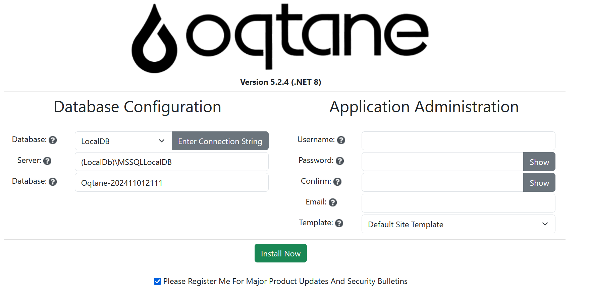
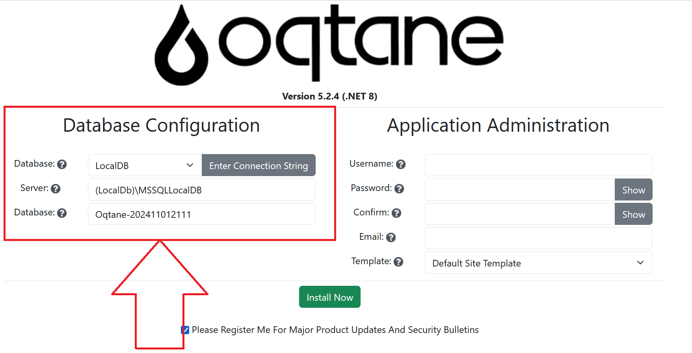
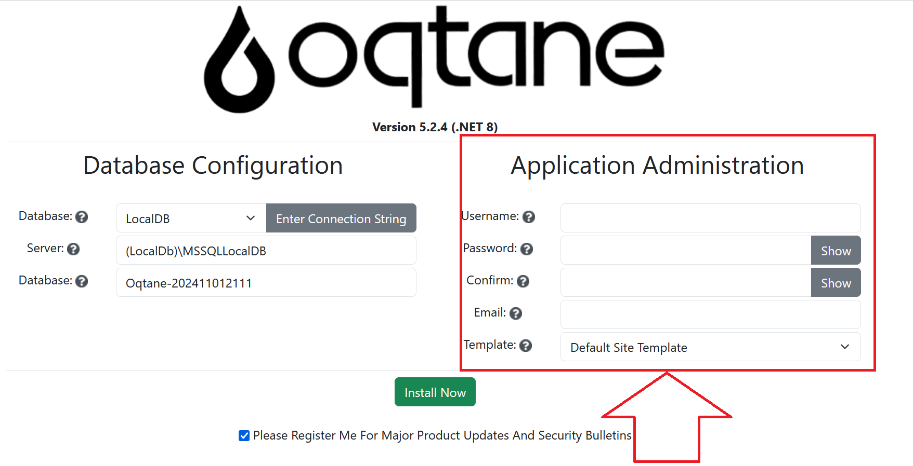
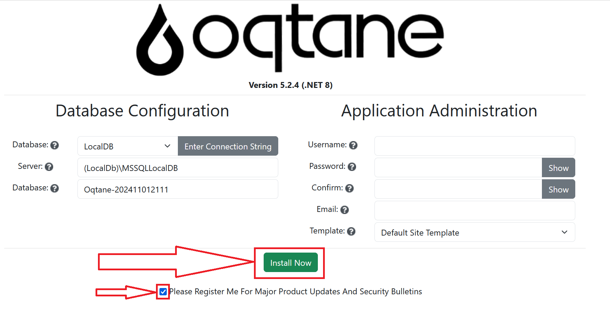
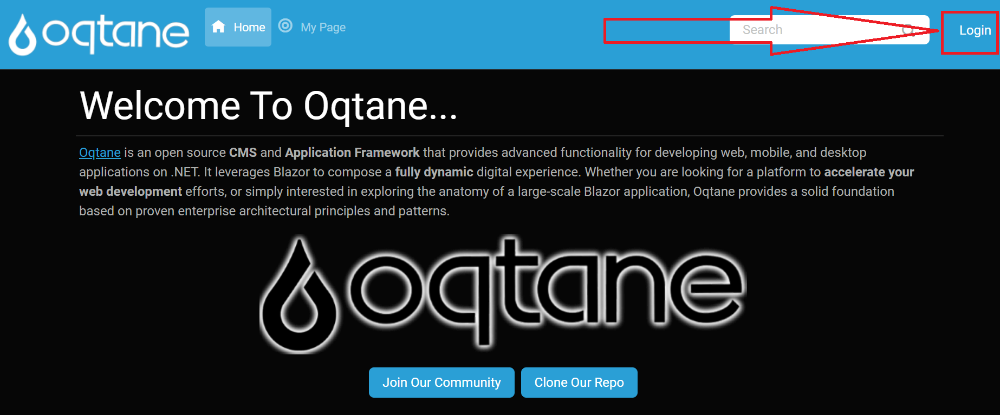
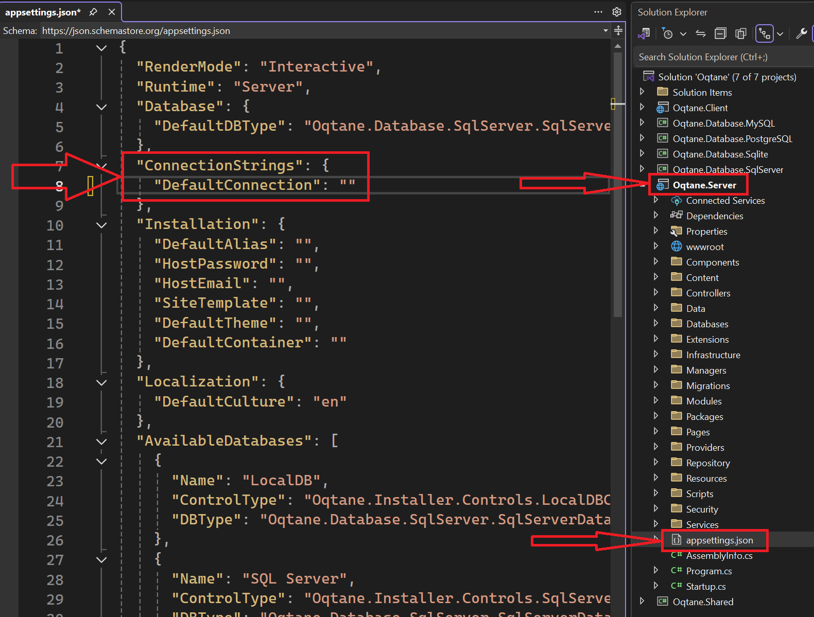

Installation Wizard
The Oqtane Installation Wizard simplifies the setup process, guiding you through essential steps to configure and deploy your Oqtane instance. Follow the instructions in each step to ensure a smooth installation.
Getting Started with the Installation Wizard
Access the Installation Wizard:
- Open your browser and navigate to the Oqtane application URL. If Oqtane is not yet configured, the wizard should load automatically.
- You should see a welcome screen prompting you to begin the setup process.

Database Configuration:
- Select your preferred database type. Oqtane supports several database providers, such as SQL Server and SQLite.
- Enter the required database connection information, including the server, database name, and login credentials.
- The wizard will attempt to connect to your database to validate the information entered.

Database Configuration Examples:
- SQL Server:
- Server:
localhost - Database:
OqtaneDB - Authentication: SQL Server Authentication with a valid username and password
- Server:
- SQLite:
- File Path: Specify a file path on the server where SQLite can create a new database file if it doesn’t exist.
Application Settings:
- Define key site settings, including:
- Host Administrator Account: Specify a username, password, and email for the main site administrator. This user will be added to the "Host" permissions role, granting full access to Content Management, Admin Management, and Host Management features.
- Template: Select a site template. Oqtane provides options such as the "Default Site Template" or "Blank Template," and any additional site templates included with your setup will also be available.
Note: The current web address used to access the install wizard will be set as the default base URL or alias for your Oqtane site.

- Define key site settings, including:
Complete Installation:
- Review your configuration and click Install. The wizard will apply your settings, configure the database, and prepare your Oqtane instance for use. (Optionally, you can select a checkbox to receive product updates and security bulletins.)

- Upon completion, you’ll be redirected to the Oqtane homepage, where you can log in with the admin account created during setup.

- Click the login button to access your site.

- Log in using the host account credentials you created.
You now have full access to Content Management, Admin Management, and Host Management features.
Additional Tips
Database Connection Issues: If the wizard cannot connect to your database, double-check the server address, database name, and credentials.
File Permissions: Ensure that your server has adequate permissions to write to necessary directories, such as for SQLite files or configuration files.
Re-running the Wizard: To re-run the wizard after installation, delete the database connection string in the
appsettings.jsonfile located in the website's root folder or in theOqtane.Serverproject. This will prompt Oqtane to load the installation wizard again upon your next visit to the application URL.The
appsettings.jsonfile with an empty database connection string, as seen in Visual Studio:
The
appsettings.jsonfile location in the IIS root site folder:
Additional Resources
For further insights on installation and troubleshooting, consider these resources:
- GitHub Discussions: Find community support for common installation questions.
- Oqtane Blog - Installation Tips: Read best practices and insights for a smooth installation.
See Also
- Installation Guides: Comprehensive setup guidance and environment-specific tips.
- Troubleshooting Installation Issues: Solutions for common installation errors and setup challenges.